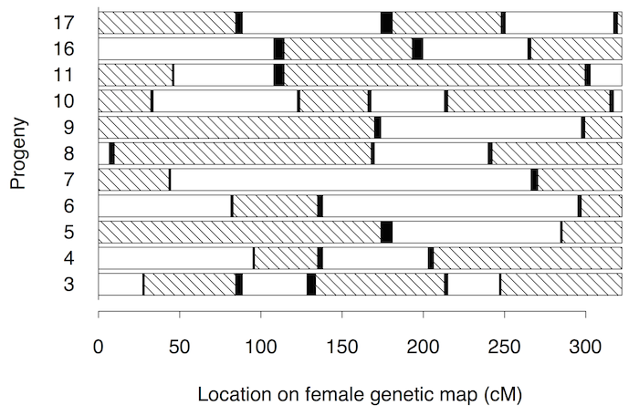

Broman KW, Weber JL (2000) Characterization of human crossover
interference. Am J Hum Genet 66:1911-1926



Figure 1. — Grandparental phase in the maternal chromosomes 2, for the 11 progeny from family 1331. Hatched segments denote grandpaternal origin; unblackened segments, grandmaternal origin. The smaller blackened segments are the noninformative segments in which a recombination occurred.